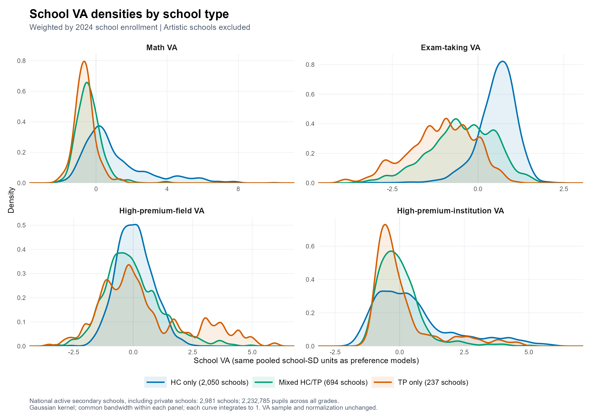

Enrollment-weighted VA densities by school type
HC-only, mixed HC/TP and TP-only schools; artistic schools are excluded as requested. Same 2024 whole-school enrollment weights, four-VA-complete national sample and fixed VA normalization as before. Private-paid schools are included, and enrollment includes all grades.

Each curve is an enrollment-weighted Gaussian kernel density and integrates to one. The bandwidth is shared across types within each dimension:0.9 times the smaller of the pooled weighted SD and weighted IQR/1.34, times effective school count to power -1/5. Effective school count is (sum of enrollment weights) squared divided by the sum of squared weights; it is used only for graphical smoothing. No school VA is trimmed. The grid covers all observed values plus five bandwidths in both tails. No demand model, mean or VA estimate is changed.